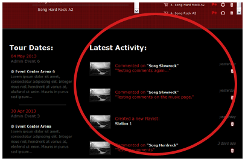

Thank you for purchasing and using the Jamroom 5 SoloArtist Skin.
Note: You must have the jrSoloArtist Module to use this skin.
The jrSoloArtist template is setup for a single artist/band site and comes with custom players for music, video and playlists.
If you are installing this template yourself please follow the instructions below using suitable file editing software such as BBEdit or alternatively use the Template Editor in your Jamroom Admin Tools.
If you prefer not to install yourself we have a guaranteed installation service available, visit us for more info: http://www.jamroom.net
Installation:
1. Unzip the file on your hard drive and using a suitable FTP software simply copy/upload the jrSoloArtist folder within the jrSoloArtist zip file to the jamroom/skins directory on your server.
2. To activate the jrSoloArtist Skin in your Jamroom, log-in as admin and click the Skins tab, then click the jrSoloArtist menu entry and on the jrSoloArtist Info tab check the set as active skin checkbox and finally click the save button.
Site branding:
Simply edit or replace the following files to change the branding of your site.
- Main Header Logo (site wide | max width: 1140px) - skins/jrSoloArtist/img/logo.png
- Footer Information - skins/jrSoloArtist/footer.tpl
SoloArtist Settings (skins/jrSoloArtist/config.php file):
jrSoloArtist has many configuration settings, as admin you will see a link in the ACP drop down menu which links to the jrSoloArtist Skin Settings page in your admin.

Note: Please take your time to view the jrSoloArtist Settings and descriptions.
Main Profile ID:
As standard the Main Profile ID is set to 1 by default as that is the first profile created after installing JamRoom 5 and will be your Solo Artist profile.
Note: You must have the jrSoloArtist module installed and activated.
Main Profile Name:
You will want to enter the Main Profile Name which is the name of the artist or account you first created after installing JamRoom 5.
Note: You must have the jrSoloArtist module installed and activated.
Index Album:
On the main pages, there is a special player to show case a single Album, enter the name of the Album you would like to show case there.
Index Content:
The Index Content allows you to choose what content shows on the home/index page.

Note: Your options are the Admin Time-line (This is default.), Newest Blogs or Latest Comments.
Fan Quota ID:
This is the quota ID for your fan quota.

Note: If you are allowing fans to signup, you'll need to set this so their profiles don't show on any of the SoloArtist pages.
Auto Play:
Enabling this option will turn auto play on for all of your Audio, Video and Playlist players.
Admin Profile Menu:
Enabling this option will show the profile menu on the SoloArtist profile pages.
Note: This is only for the Solo Artist, it does not apply to the Fans for the site.
Requirements:
Required:- Jamroom Core v5.x.x
- jrAction Module v1.x.x
- jrAudio Module v1.x.x
- jrVideo Module v1.x.x
- jrPlaylist Module v1.x.x
- jrBlog Module v1.x.x
- jrPage Module v1.x.x
- jrGallery Module v1.x.x
- jrEvent Module v1.x.x
- jrSoundCloud Module v1.x.x
- jrVimeo Module v1.x.x
- jrYouTube Module v1.x.x
Support:
If you have any support questions or require assistance please use the Support Center.
Thanks Again For Your Purchase And Your Support!.
- The Jamroom Network Team
Copyright ©2013 Jamroom Network Design
Jamroom is Copyright ©2003 TallDude Networks, all rights reserved.